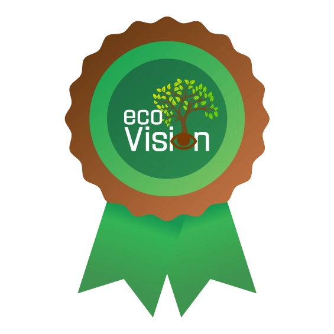
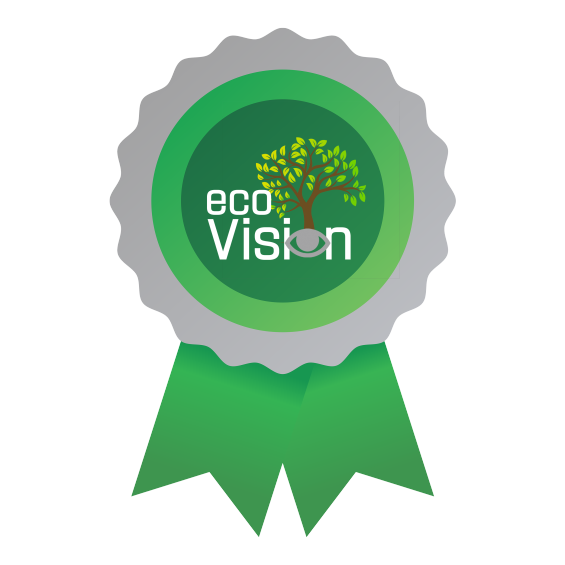
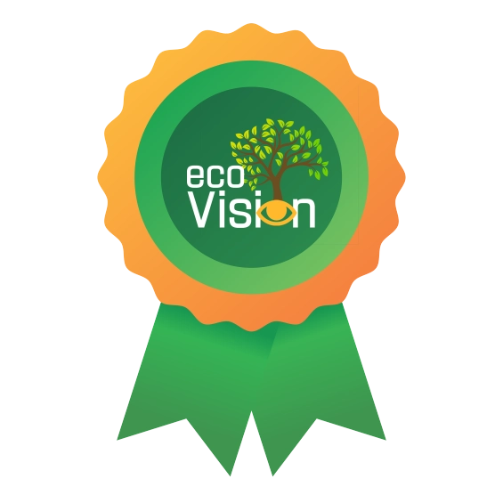
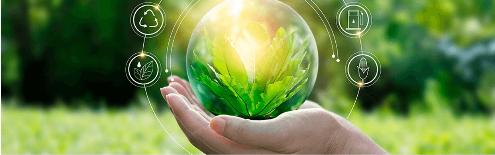

A alta concentração de dióxido de carbono (CO2) na atmosfera tem desencadeado uma série de alterações climáticas severas, incluindo a degradação da qualidade do ar, a formação de chuvas ácidas e o desequilíbrio do efeito estufa, que resulta no aquecimento global. O aumento contínuo da temperatura da Terra gera impactos profundos no meio ambiente, como o derretimento das calotas polares, elevação do nível dos oceanos e eventos climáticos extremos, além de afetar diretamente a biodiversidade e a qualidade de vida humana. Diante desse cenário alarmante, surge a urgência de abordar as causas dessa crise climática de forma mais eficaz e abrangente.
Nosso projeto visa atacar diretamente um dos principais fatores contribuidores para essas emissões: as práticas empresariais não sustentáveis. Para isso, criamos uma iniciativa baseada em um sistema de certificações sustentáveis, representado por selos de diferentes níveis – bronze, prata e ouro. A proposta é conscientizar e estimular uma mudança cultural nas empresas ao redor do mundo, incentivando-as a adotar práticas que reduzam significativamente suas emissões de CO2 e promovam a sustentabilidade.
As empresas interessadas em obter essas certificações deverão se candidatar e passar por um rigoroso processo de avaliação, onde suas práticas, políticas e investimentos em sustentabilidade serão analisados. Com base nessa avaliação, elas serão classificadas em um dos três níveis de certificação, que representam diferentes graus de comprometimento com a redução de emissões e práticas ambientalmente responsáveis. Essas classificações serão divulgadas de forma pública, com o objetivo de informar e engajar consumidores a preferirem empresas com maior responsabilidade ambiental, impulsionando, assim, um ciclo virtuoso de práticas sustentáveis.
O QUE É O SELO SUSTENTÁVEL
Os Selos de Sustentabilidade são mais do que uma certificação. Eles representam um alerta e um compromisso que a sociedade deve abraçar em busca de um futuro mais sustentável e responsável. Cada selo reflete o esforço das empresas em adotar práticas que respeitem o meio ambiente, sem prejudicar o nosso planeta. Nesse sentido, os selos não apenas reconhecem os avanços empresariais, mas também orientam os consumidores, parceiros e investidores a priorizarem organizações que colocam a sustentabilidade no centro de suas atividades.
Divididos em três níveis — Bronze, Prata e Ouro —, os selos classificam as empresas de acordo com seu grau de comprometimento ambiental, especialmente no que diz respeito à redução de emissões de CO2 e à implementação de práticas sustentáveis. Cada nível reflete o quanto a empresa está engajada em transformar suas operações e produtos para minimizar o impacto ecológico.
Mais do que uma forma de reconhecimento, o Sistema de Selos de Sustentabilidade reforça a nossa responsabilidade ambiental individual e coletiva. Ele nos lembra da importância de apoiar e escolher empresas que prezam por práticas sustentáveis, incentivando uma cultura de consumo consciente que valoriza quem se compromete com o cuidado do planeta.
A seguir, detalhamos os três níveis de selos e as missões que as empresas devem cumprir para alcançá-los, desde os primeiros passos até as iniciativas mais avançadas e inovadoras em sustentabilidade.
Categorias:
BRONZE & PRATA & OURO



Porque criamos essa iniciativa
Mudanças Climáticas
1950s – O Início da Industrialização Descontrolada
Com o início da era industrial, o crescimento econômico mundial foi alimentado por fábricas que operavam sem regulamentação ambiental. As cidades cresceram em torno desses polos industriais, e logo começaram a ver os efeitos da poluição. Nos anos 1950, Londres foi coberta por uma nuvem espessa de poluição – o Grande Nevoeiro de 1952 – que matou cerca de 12 mil pessoas em poucos dias, devido aos altos níveis de dióxido de enxofre e fuligem liberados pela queima de carvão pelas indústrias. Esse evento trágico evidenciou como a industrialização sem controle estava envenenando o ar que as pessoas respiravam.
1970s – Crise Ambiental Global em Ascensão
Na década de 1970, a poluição ambiental já era uma realidade global, agravada por práticas corporativas irresponsáveis em diversos setores. A poluição dos oceanos aumentou drasticamente com o despejo de resíduos tóxicos e petroquímicos. O famoso derramamento de petróleo do Torrey Canyon em 1967, que despejou 120 mil toneladas de petróleo bruto nas costas do Reino Unido e da França, devastou a vida marinha e foi um dos maiores desastres ambientais da época. Durante esse período, o uso de pesticidas e fertilizantes químicos também atingiu níveis alarmantes, poluindo cursos d'água e causando o fenômeno da eutrofização, que resultou na morte de ecossistemas inteiros em lagos e rios.
1990s – O Aumento da Emissão de Gases de Efeito Estufa
Nos anos 1990, a globalização trouxe consigo um crescimento explosivo na produção e consumo de combustíveis fósseis. Países em desenvolvimento, como China e Índia, emergiram como grandes centros industriais, com poucas ou nenhuma regulamentação ambiental. A queima desenfreada de carvão e petróleo fez com que as emissões de gases de efeito estufa (principalmente CO₂ e metano) disparassem. Estudos indicam que entre 1990 e 2010, as emissões globais de dióxido de carbono aumentaram em mais de 50%. Além disso, grandes setores industriais, como a produção de cimento e aço, foram identificados como fontes significativas de gases nocivos à atmosfera, agravando o aquecimento global.
2000s – A Perda Acelerada da Biodiversidade
Com a destruição contínua de ecossistemas para a expansão agrícola e urbana, a biodiversidade global sofreu um declínio dramático. Na Amazônia, o desmatamento atingiu taxas alarmantes, contribuindo para a liberação massiva de dióxido de carbono. Estima-se que a Amazônia perdeu cerca de 17% de sua cobertura florestal nas últimas cinco décadas devido à expansão agropecuária e à extração de madeira ilegal. A perda de biodiversidade, além de desequilibrar ecossistemas inteiros, também prejudica a capacidade natural de sequestro de carbono das florestas, acelerando o ciclo de mudanças climáticas.
2020s – A Crise Climática se Torna Inevitável
Nos anos 2020, os sinais da crise climática são evidentes em todas as partes do mundo. Eventos extremos como secas prolongadas, inundações devastadoras e incêndios florestais catastróficos estão mais frequentes. Segundo o Painel Intergovernamental sobre Mudanças Climáticas (IPCC), a concentração de dióxido de carbono na atmosfera em 2021 foi a mais alta em 2 milhões de anos. O derretimento das calotas polares e o aumento do nível do mar ameaçam diretamente a vida de milhões de pessoas em regiões costeiras. O agravamento da poluição atmosférica, combinado com as emissões de gases de efeito estufa, causou um aumento de doenças respiratórias crônicas em áreas urbanas densamente poluídas, como cidades na China e Índia.
Por Que Isso Importa?
O futuro do nosso planeta está em risco, e cada escolha que fazemos como sociedade impacta a vida de bilhões de pessoas, animais e ecossistemas. O que temos visto ao longo das últimas décadas é o efeito devastador da negligência ambiental. Empreendimentos descontrolados, a busca incessante por lucro a qualquer custo e a falta de responsabilidade das empresas têm nos levado a um ponto de ruptura.
Os incêndios florestais que se espalham de forma descontrolada, as secas que esgotam reservas de água, os eventos climáticos extremos que destroem comunidades inteiras – tudo isso não é mais uma previsão distante. É a realidade que vivemos. Um estudo recente da Organização Mundial da Saúde (OMS) aponta que 9 em cada 10 pessoas respiram ar poluído, causando milhões de mortes prematuras todos os anos . As empresas que ignoram seu impacto ambiental não estão apenas degradando o planeta, estão colocando em risco a saúde e o bem-estar de todos nós.
Por isso, nossa luta é importante. Queremos transformar essa realidade. Queremos mostrar que existe um caminho mais consciente e responsável. Nossa empresa nasceu da necessidade urgente de mudança, da compreensão de que cada escolha empresarial pode ser um catalisador de transformação para o bem ou para o mal. Queremos ser parte de uma solução, e mais do que isso, queremos que você seja parte dessa solução.
O que defendemos é a responsabilidade compartilhada. As empresas têm um papel fundamental em moldar o futuro. Elas possuem os recursos, o alcance e o poder para fazer a diferença em grande escala. Porém, nós, como consumidores e cidadãos, também temos um papel ativo. Cada vez que escolhemos apoiar uma empresa que adota práticas sustentáveis, estamos votando por um futuro mais saudável. Quando incentivamos a mudança e pressionamos por políticas e práticas mais justas, estamos ajudando a construir um novo modelo econômico que beneficia tanto o planeta quanto as pessoas.
Este é o momento de agir. Cada empresa que abraça a sustentabilidade, cada consumidor que exige responsabilidade, nos aproxima de um futuro onde prosperidade e saúde andam de mãos dadas com a preservação do nosso planeta. Nossa causa não é apenas pela sobrevivência das gerações futuras, mas pela prosperidade de todas as formas de vida na Terra – hoje e sempre.
O Impacto Desejado:
O selo funcionará como um título de reconhecimento para as marcas ou empresas que o obtiverem, tornando-as verdadeiros símbolos de sustentabilidade. Ao aderirem às exigências necessárias para receber essa certificação, as empresas estarão não apenas validando seu compromisso com o meio ambiente, mas também destacando-se no mercado como referências de práticas responsáveis. Esse sistema de selos pretende criar um ciclo de incentivo para que mais empresas busquem implementar mudanças reais em suas operações, buscando atender aos requisitos e, consequentemente, reduzindo suas emissões de dióxido de carbono (CO2).
Com o aumento da conscientização tanto entre empresas quanto entre consumidores, esperamos que haja uma transformação significativa no mercado global, resultando em uma redução perceptível das emissões de CO2, contribuindo diretamente para a mitigação das mudanças climáticas. O impacto almejado pode ser comparado ao efeito transformador de iniciativas como os selos “Cruelty Free” e o “Certificado Produto Vegano” na indústria de cosméticos, que trouxeram mais visibilidade para causas importantes e influenciaram as decisões de compra de milhões de consumidores.
Nossa intenção é educar e sensibilizar os consumidores sobre a importância de apoiar empresas que demonstram responsabilidade ambiental. Assim como os selos mencionados redefiniram padrões éticos na indústria da beleza, acreditamos que nosso sistema de certificações sustentáveis poderá redefinir os padrões empresariais em relação ao meio ambiente. Ao fomentar essa mudança cultural, visamos criar um impacto global significativo, onde práticas sustentáveis se tornem um fator determinante para o sucesso e a competitividade das empresas no futuro.

Ações e Soluções Sustentáveis
Descubra como você pode ajudar a reduzir o impacto climático adotando práticas sustentáveis.
Os Selos de Sustentabilidade são mais do que uma certificação.
Eles representam um alerta e um compromisso que a sociedade deve abraçar em busca de um futuro mais sustentável e responsável. Cada selo reflete o esforço das empresas em adotar práticas que respeitem o meio ambiente, sem prejudicar o nosso planeta. Nesse sentido, os selos não apenas reconhecem os avanços empresariais, mas também orientam os consumidores, parceiros e investidores a priorizarem organizações que colocam a sustentabilidade no centro de suas atividades.
Divididos em três níveis — Bronze, Prata e Ouro —, os selos classificam as empresas de acordo com seu grau de comprometimento ambiental, especialmente no que diz respeito à redução de emissões de CO2 e à implementação de práticas sustentáveis. Cada nível reflete o quanto a empresa está engajada em transformar suas operações e produtos para minimizar o impacto ecológico.
Mais do que uma forma de reconhecimento, o Sistema de Selos de Sustentabilidade reforça a nossa responsabilidade ambiental individual e coletiva. Ele nos lembra da importância de apoiar e escolher empresas que prezam por práticas sustentáveis, incentivando uma cultura de consumo consciente que valoriza quem se compromete com o cuidado do planeta.
A seguir, detalhamos os três níveis de selos e as missões que as empresas devem cumprir para alcançá-los, desde os primeiros passos até as iniciativas mais avançadas e inovadoras em sustentabilidade.
SELO BRONZE: Primeiros passos para a sustentabilidade
• Missão 1: Redução inicial de CO2
- Ação: A empresa deve contratar uma auditoria para medir sua pegada de carbono, utilizando metodologias internacionalmente reconhecidas (como o GHG Protocol).
- Meta: Reduzir em 10% suas emissões em 12 meses.
- Exemplo prático: Se uma empresa emite 1.000 toneladas de CO2 por ano, ela deverá comprovar que, no próximo ano, suas emissões caíram para 900 toneladas.
• Missão 2: Políticas internas de sustentabilidade
- Ação: A empresa deve implementar políticas de sustentabilidade formalizadas, tais como um programa de reciclagem para todos os resíduos produzidos e metas de redução no consumo de água e energia.
- Meta: Adotar pelo menos 3 práticas sustentáveis no seu dia a dia (exemplo: economia de papel, campanhas internas de conscientização, reduzir viagens corporativas).
• Missão 3: Transparência mínima
- Ação: Publicar um relatório anual que informe os dados de emissões de carbono e as práticas sustentáveis adotadas.
- Meta: Disponibilizar o relatório publicamente no site da empresa ou em canais oficiais.
SELO PRATA: Comprometimento contínuo
• Missão 1: Redução significativa de CO2
- Ação: A empresa deve estabelecer metas de médio prazo para reduzir suas emissões em pelo menos 30% dentro de 5 anos, com um plano de ação detalhado.
- Meta: Reduzir de 30% em 5 anos, acompanhando e publicando relatórios anuais para verificar o progresso.
- Exemplo prático: Se a empresa começou com 1.000 toneladas de CO2, ela deverá estar emitindo no máximo 700 toneladas até o fim do quinto ano.
• Missão 2: Investimento em energia renovável
- Ação: Substituir, pelo menos, 20% da energia consumida por fontes renováveis como solar, eólica ou biomassa.
- Meta: Comprovar que 20% ou mais do consumo energético anual é proveniente de fontes renováveis, por meio de faturas ou contratos com fornecedores de energia renovável.
• Missão 3: Iniciativas sociais sustentáveis
- Ação: A empresa deve participar ou promover campanhas públicas de conscientização sobre sustentabilidade e apoiar ONGs ou projetos sociais que tenham impacto ambiental positivo.
- Meta: Desenvolver ao menos uma iniciativa social sustentável por ano e comprovar sua execução.
SELO OURO: Líder em sustentabilidade
• Missão 1: Redução avançada de CO2
- Ação: A empresa deve alcançar a neutralidade de carbono ou reduzir suas emissões de CO2 em 50%.
- Meta: Se a neutralidade não for atingida, a empresa deve implementar programas robustos de compensação de carbono (como reflorestamento ou compra de créditos de carbono) para cobrir o restante de suas emissões.
• Missão 2: Ciclo de produção sustentável
- Ação: Garantir que pelo menos 60% de seus produtos sejam certificados como sustentáveis por organismos reconhecidos (ex: produtos orgânicos, selos verdes, etc.).
- Meta: Demonstrar que mais da metade do portfólio da empresa cumpre critérios de sustentabilidade na fabricação, utilização e descarte.
• Missão 3: Liderança e inovação sustentável
- Ação: A empresa deve criar ou apoiar grandes iniciativas de inovação sustentável, como o desenvolvimento de novas tecnologias verdes ou projetos massivos de conservação.
- Meta: Lançar pelo menos um projeto com impacto ambiental significativo, como uma nova linha de produtos sustentáveis ou grandes investimentos em projetos ambientais internacionais (ex: parcerias com governos para reflorestamento).
O Sistema de Selos de Sustentabilidade não é apenas uma certificação estática, mas um compromisso ativo e contínuo entre as empresas e a responsabilidade ambiental. Após a obtenção do selo, as empresas devem manter seus esforços para garantir que continuam alinhadas com as metas de sustentabilidade estabelecidas. Isso significa que o selo pode ser revisto a qualquer momento, caso a empresa deixe de cumprir os critérios exigidos.
Acompanhamos de perto as ações e os resultados obtidos, com verificações periódicas para assegurar que as práticas sustentáveis estão sendo mantidas e aprimoradas. Dessa forma, evitamos que o compromisso com o meio ambiente caia no esquecimento, garantindo que as empresas sigam evoluindo em direção a um futuro mais sustentável. Essa relação de transparência e monitoramento contínuo reforça a importância de preservar o selo e de manter as metas ambientais sempre em foco.